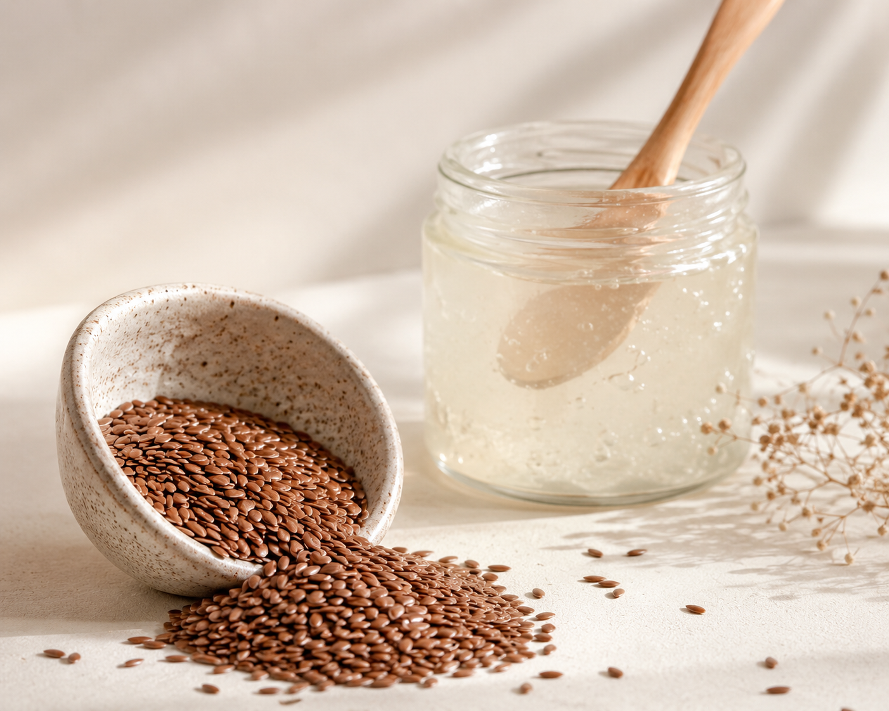
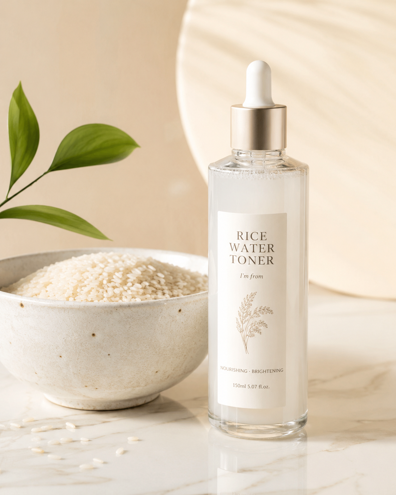
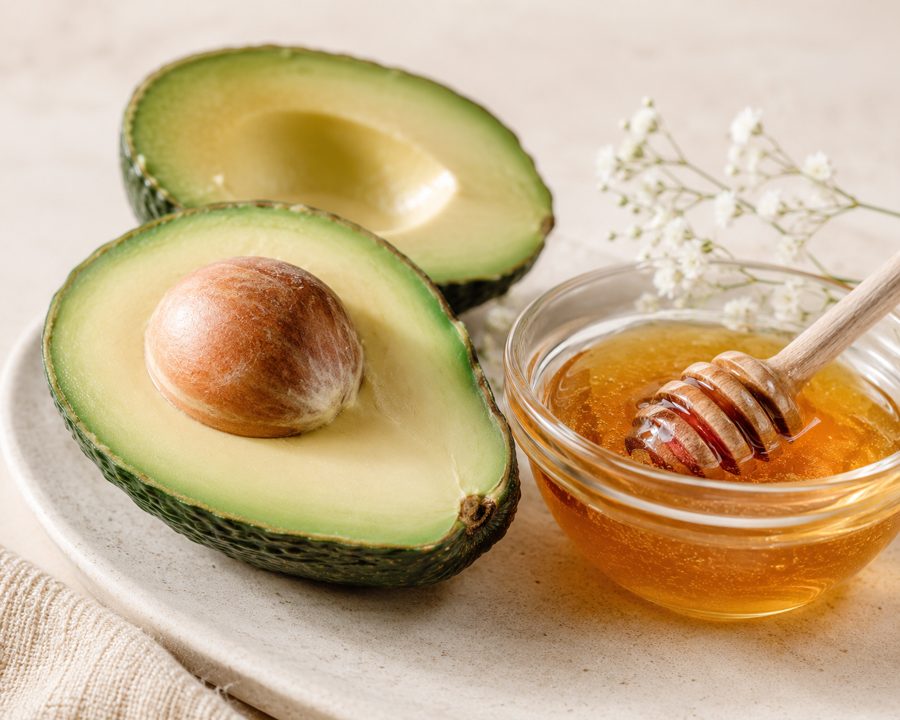
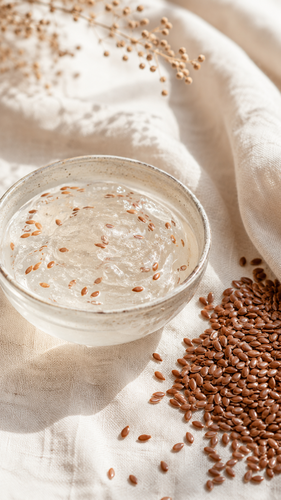

Hair Care Secret
DIY Flaxseed Gel for Intense Hair Growth
⏱️ 15 Mins

Skin Care Secret
Fermented Rice Water Toner for Glass Skin
⏱️ 24 Hours

Skin Care Secret
Avocado & Honey Mask for Sun-Damaged Skin
⏱️ 20 Mins

Skin Care Secret
Flaxseed & Coconut Water Ultra-Hydration Mask
⏱️ 20 Mins